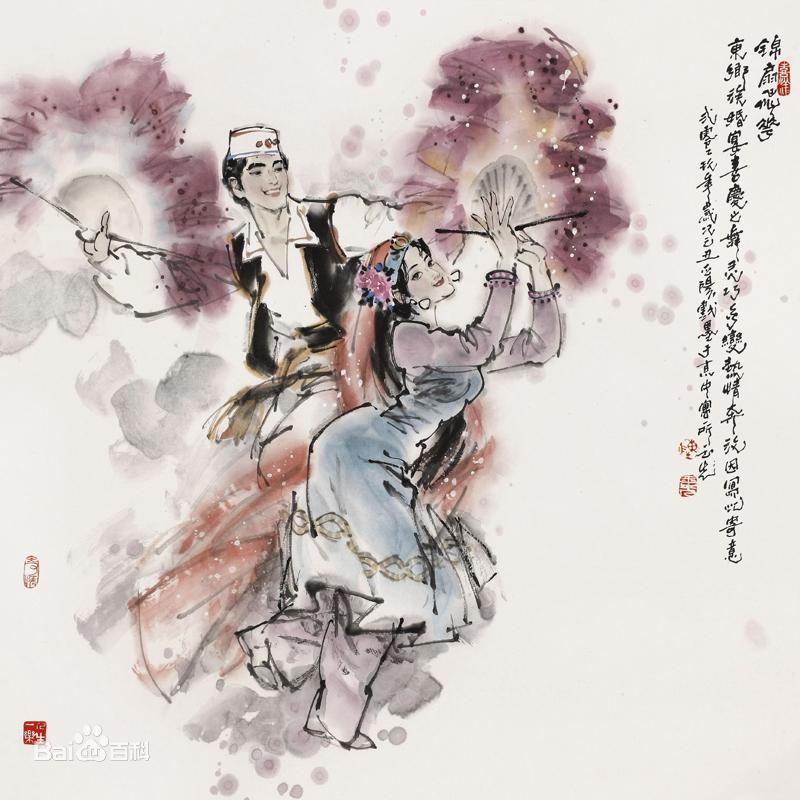

- 民族简介
- 文化习俗
- 历史发展
- 旅游介绍
东乡族
东乡族是中国甘肃省的一个少数民族，民族语言属阿尔泰语系蒙古语族，没有本民族的文字，大多数东乡族都兼通汉语，汉文为东乡族的通用文字，信仰伊斯兰教逊尼派。 东乡族主要聚居在甘肃省临夏回族自治州境内洮河以西、大夏河以东和黄河以南的山麓地带，其余分别聚居在和政县、临夏县和积石山保安族东乡族撒拉族自治县，在甘肃的兰州市、定西地区和甘南藏族自治州等地，还散居着一小部分东乡族。新中国成立后，部分东乡族从甘肃迁徙到新疆居住。 根据2010年第六次全国人口普查统计，东乡族总人口数为621500人 。
族称
东乡族因居住在河州（今临夏）的东乡而得名。 新中国成立前并不被承认是单一的少数民族，往往称之为“东乡回”或“蒙古回回”。这是因为，东乡族在生活习俗和宗教信仰方面，与西北的回族十分相似，历史文献上也常把它归诸于“回回”民族之内。 由于东乡族在语言方面基本上同蒙古语相似，也有被称为“东乡土人”或“东乡蒙古人”的 。
信仰
东乡族是中国十个全民信仰伊斯兰教的少数民族之一。 新中国成立前，东乡地区的清真寺共有595所，拱北70处，道堂9所，教主12人，宗教职业者达2000多人，平均每30户有一寺或拱北，每18.5户供养一个宗教职业者，各种宗教摊派达34种之多，群众的宗教负担比较沉重。
建筑
在改革开放以前，东乡族一般是一家一院，房屋坐北向南，四合院是理想的住家，以北房为上房。房屋有土房、瓦房、楼房、窑洞等。随着时代的发展，东乡族的住房发生了重大的变化，大多数人家盖有砖木结构的瓦房，有些家庭盖起了砖混结构的二层楼房。东乡族人在建新房或拆旧房时，一般请阿訇念经驱邪，在新房建成后，全村每户人家都来祝贺讨喜，主人则要宰鸡宰羊款待客人。
服饰
饮食
东乡族主要以小麦、豆子、青稞等面食和洋芋为主食，以牛、羊、鸡、鸭、鱼等为副食，但肉食需经阿訇或品行端正的长辈宰杀，放血后才能吃。忌吃猪、狗、马、驴、骡和凶猛禽兽的肉。不能反手倒水，吃饼子、馒头都要掰开或掰碎后吃，不能吃整的。
东乡族特别喜欢饮茶，一般每餐必有茶，最喜用云南春尖茶和陕青茶，来客人则待以“三香茶”。在盖碗内放有茶叶、冰糖、桂圆或烧熟的红枣、葡萄干等物，叫“三泡台”。忌抽烟、喝酒 [2] 。
历史
关于东乡族的历史来源，缺乏直接的、完整的文献记录，只有零星史料和片段传说，就连东乡族世世代代居住的河州州志上，也没有单独记载，说法很不一致。主要有源于回回色目人、蒙古人和多民族融合说。 回回色目人说。这种说法主要来自于东乡族的传说。据说，东乡族的祖先是中亚西亚的撒尔塔人，他们随成吉思汗西征的蒙古军队回返时来到今东乡地区定居下来，并融合了当地的汉、蒙古等民族，逐渐形成了东乡族。所以，东乡族自称“撒尔塔”。 12世纪末至13世纪初，蒙古部崛起于大漠南北，成吉思汗挥军西向，发动了大规模的西征。蒙古军队在征服撒尔塔各地的过程中，组织了大量的回回军和大批回回工匠为其服劳役。1227年3月，成吉思汗占领了河州和西宁地区，而当时这一带地方，正是东乡人活动的地区。成吉思汗曾把在征服中亚各国时掳掠而来的撒尔塔人，编入“探马赤军”。这些撒尔塔人中，有军械匠、水军、炮手，也有商人、贵族、传教士。征服者在自己的屯戍地内，把撒尔塔的各类工匠，分别集中到一个地方居住，并根据分工命名居住区的名称。至今东乡地区保留的许多地名也印证了撒尔塔人在这里居住、生活，如东乡县的“勉古赤”（银匠）乡，“阿类赤”（编织匠）村，“托木赤”（铁匠）村，“依哈赤”（钉碗匠）村，“陶毛赤”（制革匠）村等，均与他们从事的工作有关。还有“八素赤”、“沙黑赤”、“达鲁花赤”，都是“镇守者”的意思。此外，东乡族分布地区有“屯田”、“屯地”、“民地”、“新屯地”等遗留地名，也说明了“探马赤军”当时在东乡地区屯田的情况。此外，从体质特征上看，东乡族与中亚人也有相似之处。东乡族许多男子鼻梁高，眼窝深，胡须长，脸型椭圆，女子白暂。这些都说明了东乡族与中亚信仰伊斯兰教的撤尔塔人的渊源关系。
东乡族的民间有传说他们的祖先是从西域来的。据说，早在六七百年前，就有40个晒黑古杜卜（传教者）到河州传教，其中有13人定居于东乡，其首领哈木则就是在该地定居的，东乡的那勒晃、洒勒、石拉提等地，都是他们的后裔定居的地方。还有传说称，从西域来的八个“赛义德”（首领、主人的意思），也到过东乡，其中有个叫阿里阿答的，便在卜隆固村定居下来。阿里阿答逝世以后，就埋葬在达板的赛汉坪上。卜隆固村的人至今还说阿里阿答是他们的祖先。
蒙古族说。源于蒙古人说，又有两种不同的说法： 一说，东乡族是成吉思汗西征时留驻河州一带的蒙古军的后裔， 逐渐由“兵”变为“民”的。传说成吉思汗时期，有许多蒙古军驻守在河州一带，以后大部分调走，但仍有小部分继续留驻在东乡地区。后来伊斯兰教自西北传入，经青海、循化到达河州一带，当地大多数蒙古人也都改信了伊斯兰教，发展而为东乡族。东乡一些地名，如所谓“鞑子地”（“鞑子”系对蒙古族的侮称）或“扎营滩”（即蒙古军驻扎营盘之地）、“马丁”（蒙古军放马之地）等，据说就是当时蒙古军驻兵之地。 这种传说是有一定史实根据的。1226年，成吉思汗进攻西夏，攻下金属积石州（今循化一带）后，河州曾是蒙古军的重要屯居点。蒙哥汗时，为了西控吐蕃，河州一带更成为蒙古军重镇。元世祖平定康藏，建都北京，派宗王、万户府、吐蕃宣慰使俱驻河州。13世纪末（元成宗铁木耳时），驻守唐兀（河州在内）地区的蒙古宗王阿难答（忽必烈孙）信奉了伊斯兰教，其部下15万余人，“闻从而信教者居其大半。”
另一说，东乡族是元代窝阔台汗国的一部分蒙古人的后裔。这部分蒙古人当时因受到周围信仰伊斯兰教民族的影响，改信了伊斯兰教，从而与原信佛教的蒙古族发生了冲突。他们被认为是宗教叛徒，被迫东迁，经猩猩峡向内地迁徙，到达“镇番”（今甘肃省民勤县），之后又分二路：一路入贺兰山到河套地区定居，即今阿拉善左旗信仰伊斯兰教的蒙民；另一路则南迁渡黄河进入河州地区，因与蒙古族隔绝，蒙文和伊斯兰教使用的阿拉伯文又不一致，所以虽仍说蒙语，但不使用蒙文。
东乡凤凰山
在东乡这苍茫突兀的高山上有四处凤凰山，分居东南西北四个方位，四凤呈祥。因此人们赋予她一个美丽的名字--"凤凰落脚的地方"。凤凰是百鸟之王，祥瑞的象征。千年凤凰山，点缀在东乡奇山奇景中，形成迷人的人文景观，构成一道亮丽的风景线。
东大坡森林公园
东大坡森林公园位于东乡县西南部，距临夏市12公里，公园占地面积4284亩，森林覆盖率高达91%。这里松柏树立，苍翠挺拔，层层山峦，道道沟壑，尽掩映于葱笼之中，空气清新怡人，树荫密布，宛如置身于原始的大森林之中，闻山间花儿之郁香，聆林中鸟儿之歌唱，观松涛之阵阵，品人与自然和谐之美，无限风光在其中。东大坡森林公园丛林密布，云杉、油松等各类树木高大挺拔，远远望去宛如一颗绿宝石，镶嵌在东大坡上。绿色的森林、黄色的土地，红色的丹霞地貌，绘成东大坡独有的景观。国道213线，像一条玉带，蜿蜒盘旋，将东大坡紧紧缠绕。站在山巅，举目四眺，黄河母亲若隐若现，临夏全景尽收眼底，可领略山峰之奇特，大自然之广袤，顿觉心旷神怡，诗兴大发。这时，山间响起悠悠的"临夏花儿"声，忍不住放开喉咙回应几声，别有一番情趣在里头。
原先的东大坡并不是这样的，以前这里植被稀少，水土流失严重。为改变这一现状，东乡人民20年如一日，矢志不渝大搞植树造林，才有了今日松柏林立、丛林密布的东大坡。县上还充分利用东大坡得天独厚的优势，大力发展生态旅游业。东大坡山庄、山情园、丰顺山庄掩映于丛林之中，若隐若现，曲径通幽，蜿转盘旋。置身于此，空气清新，天高气爽。窖洞建筑独领-，民族美食独具特色，东乡手抓馋涎欲滴，吸引八方游客前来驻足观赏，细细品味。